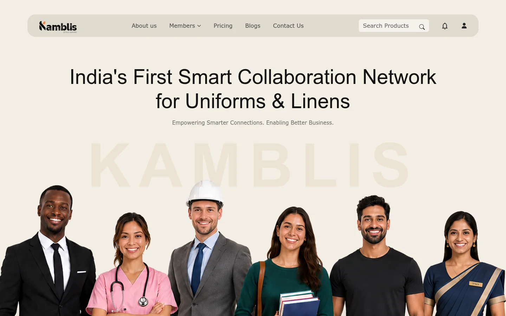

Give discovery a clear structure
Categories, navigation, and product information need a hierarchy that supports scanning before detailed comparison.
Collaborative interface design for a uniforms and linens business network.

Public-facing Kamblis website screenshot.
Kamblis connects businesses in the uniforms and linens industry. Marketplace interfaces need to make products, members, and next steps understandable across different user goals.
I worked with a fellow designer on the product experience, contributing both independently and jointly. Our design work involved interface organization, discovery paths, product and member information, responsive behavior, and reusable patterns.
Categories, navigation, and product information need a hierarchy that supports scanning before detailed comparison.
Business identity and product detail should each help a visitor understand whether a connection is relevant.
Responsive layouts keep key content and actions legible as the marketplace adapts to narrower viewports.
The public screenshot gives context for the platform. It does not assign every visible feature to my individual contribution, and no measured discovery improvement is claimed.
Approved before-and-after screens and review feedback would make individual decisions and effects clearer.